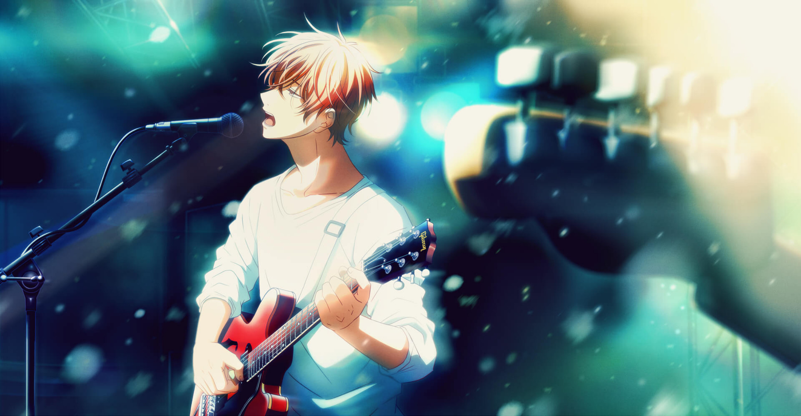
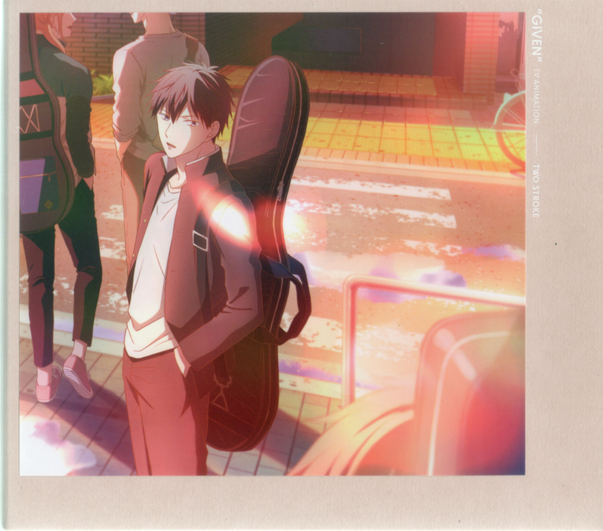

Specialty: Signature Espresso
Bio: Chef Mafuyu Sato has over 10 years of experience crafting the perfect espresso. His passion for coffee has led him to perfect the art of espresso brewing, making it an unforgettable experience for every customer.

Specialty: Handcrafted Lattes
Bio: With a creative background and a love for coffee, Chef Ritsuka Uenoyama has mastered the art of latte art and creating the creamiest, most flavorful lattes that keep customers coming back for more.